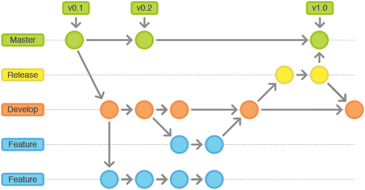

git
shell
用户 -> 壳 -> 核 -> 硬件
- 壳分成两类
- 图形界面
GUI代表比如：windows操作系统 - 命令行
cli- 在
Windows上cmd、powershell - 在
Linux上sh、bash
- 在
- 图形界面
认识bush这个shell
在windows下使用bush，需要一个软件，模拟集成了bush大部分命令。
bash命令格式
- 命令 [-options] [参数]，[]表示可选
查看帮助：命令 –help
bash常见命令
- pwd(print working directory) 查看当前目录
- cd(change directory) 切换目录
- ls(list) 显示目录下所有文件 默认是当前目录下
- ls 文件名 显示文件下的所有目录
- ls -a 全部文件 ./ ../
- ls -l 具体信息 时间 存储
- ★ ls -al 显示所有文件和具体信息
- ls .. 打开上级文件内容
- ★ mkdir(make directory) 当前创建目录
- ★ touch 创建文件 （可以添加后缀建立不同的文件）
- cat 文件 打开文件内容页面 空格换页
- q(quit)退出
- ★ less 路径文件名 打开文件内容页面 空格换页 q(quit)退出
- more
- ★ rm 删除文件
- rmdir 删除空文件夹
- rm -r 递归删除非空文件夹
- rm -rf 强制递归删除非空文件夹不提示是否确定删除对话框
- mv(move)路径 剪切文件
- mv ../index.html ./demo.html 将上级的index移动到当前并更改名称为demo
- cp(copy)路径 复制文件
- cp ../index.html ./ 将上级的index复制到当前
- cp ../index.html ./demo.html 将上级的index复制到当前并更改名称为demo
- head tail 文件头尾
- head -10 index.html index头部十行内容显示
- tail -10 index.html
- history 查看操作历史
- ls > index.txt 不是拷贝 只是将本页下文件的名称显示在index.txt 覆盖操作
- 重定向（定向：单页显示输出。重定向：改变输出位置）
- ls >> index.txt 追加操作将本页下文件的名称显示在index.txt
- whoami 查看当前用户
- tar 解压缩 解压gz文件 不支持rar文件
- wget 下载文件
- curl 网络请求 curl http://www.baidu.com
- grep 匹配 一般结合管道符使用
- Usage: grep [OPTION]… PATTERN [FILE]…
- grep demo index.txt(匹配index.txt中的demo开头的文件)
- 管道符 |
- ls | grep index (在上次内容里寻找index开头的文件)
操作快捷键
- ↑ 键 历史记录
- Tab 键 补全文件名
- Tab键 两次 显示所有相同文件名的文件
- cd i + Tab 快捷显示 i 开头的文件
git诞生自Linux，通过使用命令行来完成，所以在wind是使用时有一个必要的前提windows需要支持bash命令
历史
| 项目 | 命令功能 |
|---|---|
| Unix 起初是开源项目 后期收版权 | more命令 |
| Linux 创建开源 | less命令 |
| 类unix |
vi编辑器
如同windows下的记事本，vi编辑器是Linux的标配
三种模式
模式不一样 使用的操作不一样。
- 命令模式(默认)
- 插入（编辑）模式(i 或 a进入 esc退回命令)
- 底行模式(shift+:进入 esc退回命令)
编辑
底行模式下
- :set nu 设置行号
- 退出
- :q 退出
- :q! 不保存强制退出
- 保存
- :w 保存
- :w 文件名 另存为
- ★ :wq 保存并退出
- ★ :e! 撤销更改，返回上一次保存状态
命令模式下
- ZZ 保存并退出
- ★ dd 删除当前行
- u 撤销
- yy 复制当前行
- p 粘贴
- ctrl+f 向前翻页
- ctrl+b 向后翻页
- 编辑
- i 或者 a 进入编辑（i光标在当前位置 a光标后移一个字符）
- o 当前光标下插入
- A 光标最后
- O 当前光标上新建一行
SSH(了解)
SHH 是一种网络协议 由于计算机之间的加密登录
OpenSHH 使用广泛 用到另一种软件 PuTTY 。git也集成了SHH
SHH 对称性加密
A 同一个密钥 B
- shh 用户@地址 登录
- exit 退出
非对称性加密
- A 创建一对密钥 公钥和私钥
- 公钥加密数据 但是只能对应的私钥才能解开
- 私钥加密数据 但是只能对应的公钥才能解开
- B
- 如果A是公钥加密 使用本地私钥解密
- 如果A是私钥加密 使用本地公钥解密
第一次A使用时获得B计算机的公钥 B此时自存私钥
第二次A登录时 A可以使用公钥加密 B接收到公钥加密的数据后
会自动使用自留的私钥进行解密
版本控制
关于版本控制（ver）
是一种记录一个或若干文件内容变化，以便将来查阅特地版本情况的系统。
本地版本控制系统
- 本地文件更改一次 版本出现一次 撤回麻烦 难实现多人协同开发
- 可以联想游戏存盘点
集中版本控制系统
- 公共的服务器内部存储版本历史
- 可以实现多人协同开发
- 联想游戏帐号 不同手机端登录 关卡存在服务器
- 代表：SVN
- 缺点：
- 必须有一个公共服务器
- 依赖网络
- 速度变慢
- 服务器出错 殃及范围大
分布式版本控制系统
- 差别在于 集中式没有存盘点在用户电脑
- 优点：用户有备份在电脑 即使服务器崩溃也有备份
- 代表：Git
Git
三个特性：版本创建 多任务开发 协同开发
Git通过监控文件的状态实现版本控制的
工作原理
Git的三种状态对应三个区域
- 已修改(modified) — 工作目录
- 已暂存(staged) — 暂存区域
- 已提交(committed) — Git仓库
- 产生一个新存盘点
操作
- 第一次使用时-建立用户
- git config –global user.name Lucy
- git config –global user.email Lucy.@sina.com
- 目录成为受git控制的目录
- git init 初始化操作 让文件被git管理 建成.git仓库隐藏文件
- 追踪文件
- git add （文件路径） 添加文件至暂存区 修改后就add 可以多次add
- 放至仓库
- git commit -m ‘备注信息’ 提交并记录
- 查看版本（历史）
- git log 查看存盘点（add一次一个存盘点）内容 ‘第一次提交’
- 修改后 git add 新起暂存点
- git commit -m ‘第2次提交’ 提交并记录
- git log 查看存盘点 commit有id值
- 查看状态（辅助工具）
- git status 查看状态
- git add (文件名) 修改文件后添加暂存盘
- git add -A
反悔
- 暂存区
- git checkout (文件名) 撤消更改（已提交也可以）
- 仓库
- git log 得到commit所有数据 有每次暂存提交的数据id
- git reset –hard (SHA值 id)
- 暂存区
提示：
- modified(已修改)
- untracked (未追踪)
- git忽略空目录
- 快捷操作：ls -a 可以查看所有文件
Git 分支
多任务同时开发、每次的版本（存盘点）基于分支存在的（版本是记录在某个分支下的）
每次commit操作会生成一个版本，这个版本会记录分支，默认会生成一个mater（第一次创建时就会有）
- 最好在master上创建分支，不要在分支下创建分支，以防万一分支有bug，带给子分支
git branch 分支名git checkout 分支名切换分支 （切换前先commit）git checkout -b 分支名切换并创建- 分支有继承关系
- 查看当前有哪些分支
git branch- git branch -a 所有分支
- git fetch origin 远程分支 只是看到 需要合并才能在本地看见分支
- git pull = fetch+merge
- *表示当前分支
合并分支
git merge被合并的分支名称- git fetch origin 远程分支 只是看到 需要合并才能在本地看见分支
- git pull = fetch+merge
删除分支
- 本地
git branch -d - 远程
git push origin :分支名 - 远程
git push origin --delete 分支名
- 本地
- 一些原则
- 不要有太多的子分支
- 要有一个“稳定分支”，即master分支不要轻易被修改
- 要有一个开发分支（developer），保证master分支的稳定性
- 所有的功能分支（feature）从developer创建
- 所有功能开发完成后新建发布分支（release）

协同开发
- 创建
- 空文件夹 以
.git后缀 git init --bare使其成为 裸仓库（创建后不用再进入）
- A传入裸仓库
- A仓库传入前提是有过
commit，是实在的master才能push内容 - 操作：
git push 裸库路径 master
- B拿裸库内容
- B仓库是实在的
master git pull 裸库路径 master在仓库拿到A上传的内容
- B修改后上传内容
git push 裸库路径 master
- A拿到B修改的内容
git pull 裸库路径 master
注意 master指的是分支名

与服务器
git高级
忽略文件
- 创建无文件名的 .gitignore
- 命令行创建
touch .gitignore - 另存为 所有文件
.gitignore
- 命令行创建
- 在
.gitignore文件里编写*.jpg(去除图片)具体文件名字
- 创建无文件名的 .gitignore
比较差异
- git difftool 比较工作区域和暂存区域差异
- 当暂存区未被commit 的文件被修改 但是不清楚修改了哪些地方 可以diff一下查看
- git difftool 比较工作区与特定提交的差异 利用SHA值
- git difftool SHA值
- git difftool 比较某两次SHA值的差异
- git difftool SHA值 SHA值
- git difftool 比较工作区域和暂存区域差异
回滚
- git reset （重新活一回）
- –hard 工作区会变 历史会变 暂存区会变
- –soft 只改变历史
- –mixed （默认）历史会变 暂存区会变 工作区不变
- git checkout
- 暂存还原工作区
- 分支切换
- git checkout SHA值 – 文件名 （回滚某个文件）
- git reset （重新活一回）
暂存区
- .git文件夹 包括暂存区和缓存区
小结：
- 版本管理：git add -> git commit = 新版本
- 多任务开发（分支）一个分支代表一个任务，分支之间不会相互影响：
git branch -> git checkout -> git add -> git commit = 新版本 - 协同开发（多个人共同开发）通过共享仓库实现。
命令汇总
- git config –global user.name 名字/ user.email 邮箱（一次）换电脑需要重新执行
- git init (项目根目录下)（一次）
- 创建版本 git add -A => git commit -m ‘’ => 新版本（默认创建master分支）
- 分支实现多任务 git branch 分支名 => 切换分支 checkout 分支名 => git add =>git commit
通过共享仓库 实现协同开发 XX.git 结尾的任意目录 => 进入目录 git init –bare
进入某个仓库 => git push XX.git master
另个仓库 => git pull XX.git master
XX.git 可以放到本地计算机 但其他开发中无法访问
解决的话，需要专门服务器来存放XX.git这个仓库。但是并不是所有人都能熟练操作仓库所以此方法成本高
github提供了共享仓库服务
注意事项
- hosts文件 用来指定 域名和IP 连接本地服务器时
- gitlab 小组 成员权限 设置 成员进入时候权限
- owner可以push到master
- 有些情况下 需要先pull再push 得到其他伙伴插队修改的文件